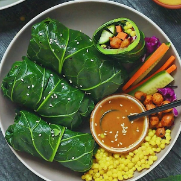

Ingredients
For the Wraps:
- 1 can 15 oz chickpeas rinsed & dried
- 2 tbl sweet chili sauce
- 1 tbl tamari
- 1 bunch of collard greens
- 2 cups cooked grain of choice
- 3 carrots cut into matchsticks
- 3 mini cucumbers cut into matchsticks
- 1 cup purple cabbage shredded
For the sauce:
- 1/4 cup tahini
- 2 tbl tamari
- juice of 1/2 lime
- 2 tbl maple syrup
- 2 tbl of chili garlic sauce
Instructions
For chickpeas:
- Mix sweet chili sauce & tamari then add to chickpeas & place on a parchment lined
baking sheet. Bake at 400 F for 20 minutes shaking tray half way.
- For collard greens: on stovetop bring a pot of salted boiling water to a boil. Working in batches
of 3 leaves at a time, boil for 1 min, use tongs to retrieve & place in a large mixing bowl with ice
& cold water.
- After all greens have been blanched, cut off stem off of each at the base of the leaf. Set aside.
- To make spicy tahini sauce whisk all ingredients together. Add warm water if too thick.
To assemble wraps:
- Take 1 collard green, smooth side facing up with cut stem closest to you, leaving
a bit of space add 2-3 carrot sticks, then 2-3 cucumber sticks, cabbage, & chickpeas. Top with
grains.
- To roll, fold in left and right edges over sides of filling then roll. Use a bit of sauce to
seal. Place seam side down. Repeat. Enjoy!
Source Here